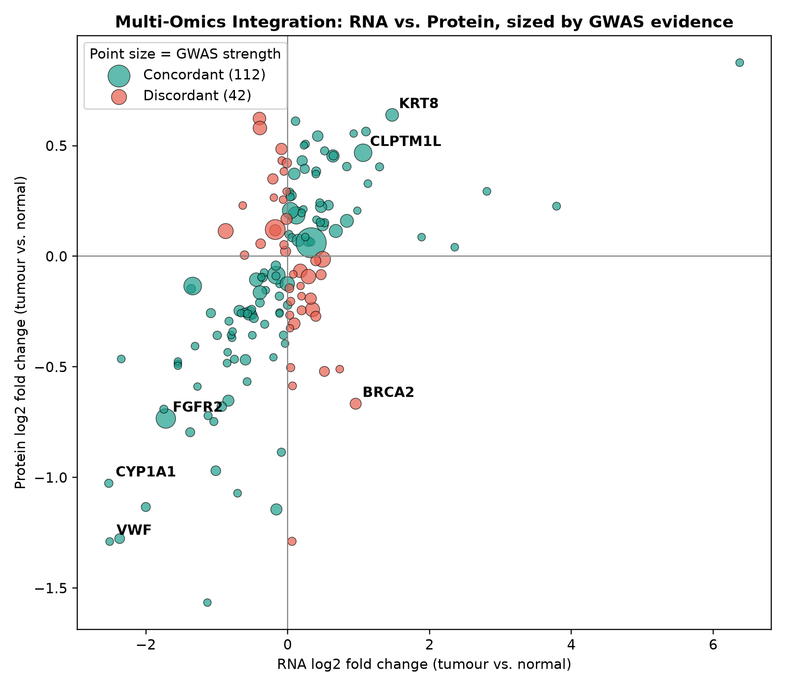
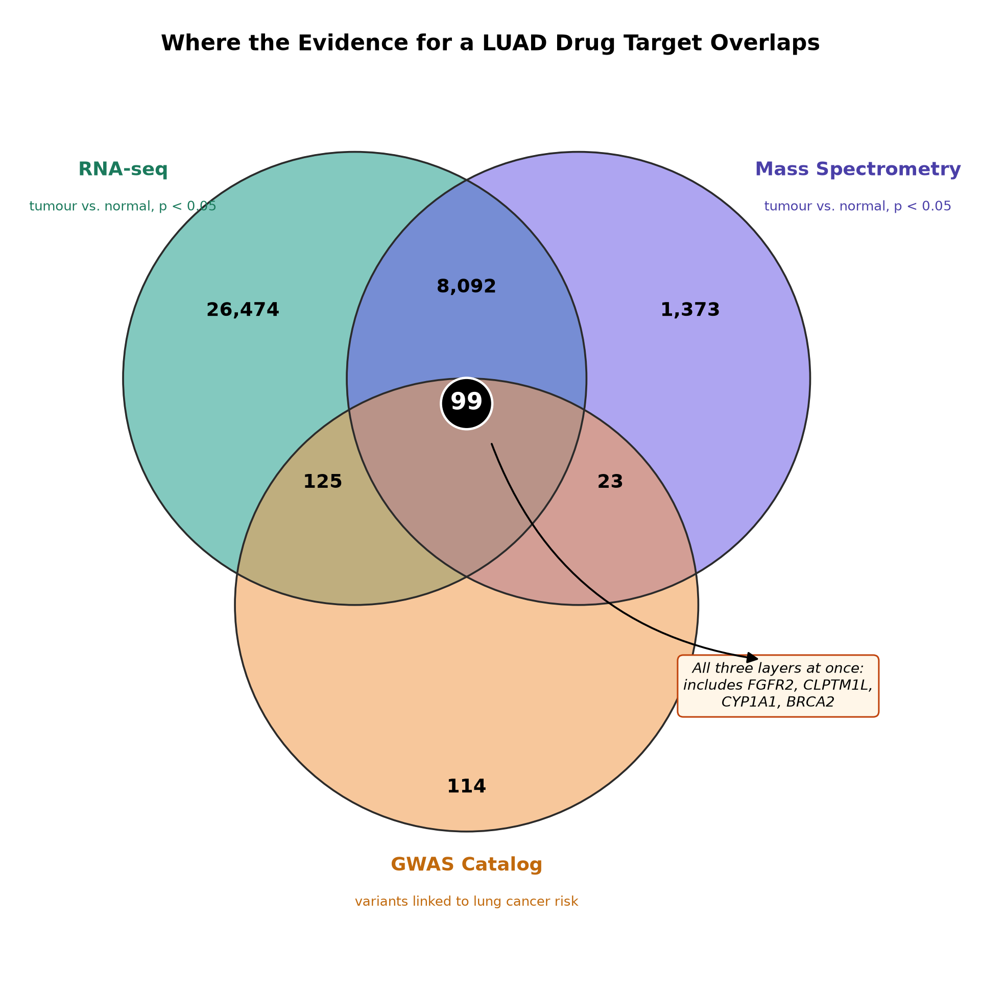
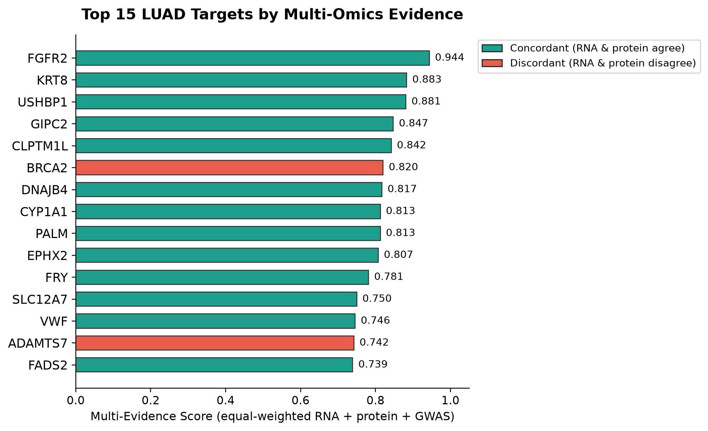

Which lung adenocarcinoma genes are worth a drug program?
A gene earns a place on the shortlist only if three independent filters agree: it is disrupted at the RNA, protein and genetic level in patients, its sequence resembles proteins that have already been drugged, and its predicted structure has a real, confident pocket. This page walks through each filter with the actual data. Click any gene to open its evidence card.
Multi-omics integration
Each point is one of the 154 harmonised genes, placed by its tumour-vs-normal change in RNA (x) and protein (y). Point size is the strength of its lung adenocarcinoma GWAS association. Genes in the top-right and bottom-left quadrants are concordant; the other two quadrants are where protein disagrees with RNA.
Top 15 by multi-evidence score
Transcriptomic, proteomic and genomic evidence are rank-normalised and weighted equally, so no single layer's scale dominates.
Druggability triage
Each top-15 sequence was embedded with the ESM C protein language model and compared against a reference panel of proteins with clinical drug history. The classifier was validated with a family-held-out split. A random split looked better, but only because close relatives leaked between train and test. The prior was then blended 60 : 40 with the patient evidence.
Modality map
Probability the target resembles a small-molecule target (x) versus an antibody target (y). Click a point for its nearest drugged neighbours.
How the ranking moved
Rank from patient evidence alone (left) to final rank after the tractability prior (right). Hover a line to trace one gene.
Structure assessment
The two strongest small-molecule candidates were taken to AlphaFold. Drag to rotate, scroll to zoom and hover for residue confidence. The green sticks are the real drug molecule from the crystal structure, superposed into the AlphaFold model, so you can see that the predicted pocket is where the drug actually binds.
Per-residue confidence (pLDDT)
Click any bar to fly the 3D viewer to that residue. Shaded bands are the confident domains found from the PAE matrix.
Predicted aligned error
Dark = AlphaFold is confident about the relative position of two residues. Off-diagonal light blocks mean domain placement is uncertain.
Prioritised target package
The final call for the discovery team. Click a row for the full evidence card.
| Final rank | Gene | Multi-omics | Tractability | Structure | Call |
|---|
Static figures
Publication-style versions of the key figures. Click to enlarge.

Fig 1 · Multi-omics integration

Fig 2 · Cross-layer overlap

Fig 3 · Top 15 ranking
Limitations and next experiment
Convergence is not causation
These genes have convergent statistical and structural support. That does not show they drive LUAD, or that a drug against them would work. The GWAS layer also comes from different people than the 213 CPTAC patients.
Smoking status is invisible
LUAD in smokers and never-smokers is close to two diseases at the molecular level. Averaging across all patients can hide a gene that matters a lot in one group, and may be why several top genes look decreased on average.
The tractability prior learns history
ESM C learns from past drug programmes. A near-zero score (BRCA2, KRT8, PALM) means "unlike anything drugged so far", not "undruggable". Family-held-out validation keeps that number honest.
One structure, one snapshot
AlphaFold gives a single apo conformation. It cannot show whether the pocket stays open with real partners, or whether a tumour mutation opens a new one. FGFR2's other domains have no experimental structure to check against.
Code and data
References
- Gillette, M. A. et al. (2020). Proteogenomic characterization reveals therapeutic vulnerabilities in lung adenocarcinoma. Cell. doi:10.1016/j.cell.2020.06.013
- McKay, J. D. et al. (2008). Lung cancer susceptibility locus at 5p15.33. Nature Genetics. doi:10.1038/ng.254
- James, M. A. et al. (2012). Functional characterization of CLPTM1L as a lung cancer risk candidate gene in the 5p15.33 locus. PLoS ONE. doi:10.1371/journal.pone.0036116
- Hukkanen, J. et al. (2002). Expression and regulation of xenobiotic-metabolizing cytochrome P450 enzymes in human lung. doi:10.1080/20024091064273
- Pacini, L. et al. (2021). Targeting the fibroblast growth factor receptor (FGFR) family in lung cancer. Cells. doi:10.3390/cells10051154